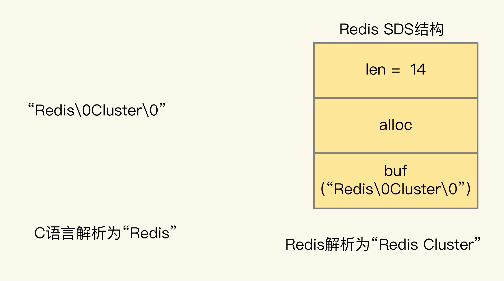
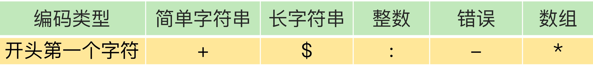

- 00 开篇词 这样学Redis，才能技高一筹.md
- 01 基本架构：一个键值数据库包含什么？.md
- 02 数据结构：快速的Redis有哪些慢操作？.md
- 03 高性能IO模型：为什么单线程Redis能那么快？.md
- 04 AOF日志：宕机了，Redis如何避免数据丢失？.md
- 05 内存快照：宕机后，Redis如何实现快速恢复？.md
- 06 数据同步：主从库如何实现数据一致？.md
- 07 哨兵机制：主库挂了，如何不间断服务？.md
- 08 哨兵集群：哨兵挂了，主从库还能切换吗？.md
- 09 切片集群：数据增多了，是该加内存还是加实例？.md
- 10 第1～9讲课后思考题答案及常见问题答疑.md
- 11 “万金油”的String，为什么不好用了？.md
- 12 有一亿个keys要统计，应该用哪种集合？.md
- 13 GEO是什么？还可以定义新的数据类型吗？.md
- 14 如何在Redis中保存时间序列数据？.md
- 15 消息队列的考验：Redis有哪些解决方案？.md
- 16 异步机制：如何避免单线程模型的阻塞？.md
- 17 为什么CPU结构也会影响Redis的性能？.md
- 18 波动的响应延迟：如何应对变慢的Redis？（上）.md
- 19 波动的响应延迟：如何应对变慢的Redis？（下）.md
- 20 删除数据后，为什么内存占用率还是很高？.md
- 21 缓冲区：一个可能引发“惨案”的地方.md
- 22 第11～21讲课后思考题答案及常见问题答疑.md
- 23 旁路缓存：Redis是如何工作的？.md
- 24 替换策略：缓存满了怎么办？.md
- 25 缓存异常（上）：如何解决缓存和数据库的数据不一致问题？.md
- 26 缓存异常（下）：如何解决缓存雪崩、击穿、穿透难题？.md
- 27 缓存被污染了，该怎么办？.md
- 28 Pika：如何基于SSD实现大容量Redis？.md
- 29 无锁的原子操作：Redis如何应对并发访问？.md
- 30 如何使用Redis实现分布式锁？.md
- 31 事务机制：Redis能实现ACID属性吗？.md
- 32 Redis主从同步与故障切换，有哪些坑？.md
- 33 脑裂：一次奇怪的数据丢失.md
- 34 第23~33讲课后思考题答案及常见问题答疑.md
- 35 Codis VS Redis Cluster：我该选择哪一个集群方案？.md
- 36 Redis支撑秒杀场景的关键技术和实践都有哪些？.md
- 37 数据分布优化：如何应对数据倾斜？.md
- 38 通信开销：限制Redis Cluster规模的关键因素.md
- 39 Redis 6.0的新特性：多线程、客户端缓存与安全.md
- 40 Redis的下一步：基于NVM内存的实践.md
- 41 第35～40讲课后思考题答案及常见问题答疑.md
- 加餐 01 经典的Redis学习资料有哪些？.md
- 加餐 02 用户Kaito：我是如何学习Redis的？.md
- 加餐 03 用户Kaito：我希望成为在压力中成长的人.md
- 加餐 04 Redis客户端如何与服务器端交换命令和数据？.md
- 加餐 05 Redis有哪些好用的运维工具？.md
- 加餐 06 Redis的使用规范小建议.md
- 加餐 07 从微博的Redis实践中，我们可以学到哪些经验？.md
- 结束语 从学习Redis到向Redis学习.md
加餐 04 Redis客户端如何与服务器端交换命令和数据？
在前面的课程中，我们主要学习了 Redis 服务器端的机制和关键技术，很少涉及到客户端的问题。但是，Redis 采用的是典型的 client-server（服务器端 - 客户端）架构，客户端会发送请求给服务器端，服务器端会返回响应给客户端。
如果要对 Redis 客户端进行二次开发（比如增加新的命令），我们就需要了解请求和响应涉及的命令、数据在客户端和服务器之间传输时，是如何编码的。否则，我们在客户端新增的命令就无法被服务器端识别和处理。
Redis 使用 RESP（REdis Serialization Protocol）协议定义了客户端和服务器端交互的命令、数据的编码格式。在 Redis 2.0 版本中，RESP 协议正式成为客户端和服务器端的标准通信协议。从 Redis 2.0 到 Redis 5.0，RESP 协议都称为 RESP 2 协议，从 Redis 6.0 开始，Redis 就采用 RESP 3 协议了。不过，6.0 版本是在今年 5 月刚推出的，所以，目前我们广泛使用的还是 RESP 2 协议。
这节课，我就向你重点介绍下 RESP 2 协议的规范要求，以及 RESP 3 相对 RESP 2 的改进之处。
首先，我们先来看下客户端和服务器端交互的内容包括哪些，毕竟，交互内容不同，编码形式也不一样。
客户端和服务器端交互的内容有哪些？
为了方便你更加清晰地理解，RESP 2 协议是如何对命令和数据进行格式编码的，我们可以把交互内容，分成客户端请求和服务器端响应两类：
- 在客户端请求中，客户端会给 Redis 发送命令，以及要写入的键和值；
- 而在服务器端响应中，Redis 实例会返回读取的值、OK 标识、成功写入的元素个数、错误信息，以及命令（例如 Redis Cluster 中的 MOVE 命令）。
其实，这些交互内容还可以再进一步细分成七类，我们再来了解下它们。
- 命令：这就是针对不同数据类型的操作命令。例如对 String 类型的 SET、GET 操作，对 Hash 类型的 HSET、HGET 等，这些命令就是代表操作语义的字符串。
- 单个值：对应 String 类型的数据，数据本身可以是字符串、数值（整数或浮点数），布尔值（True 或是 False）等。
- 集合值：对应 List、Hash、Set、Sorted Set 类型的数据，不仅包含多个值，而且每个值也可以是字符串、数值或布尔值等。
- OK 回复：对应命令操作成功的结果，就是一个字符串的“OK”。
- 整数回复：这里有两种情况。一种是，命令操作返回的结果是整数，例如 LLEN 命令返回列表的长度；另一种是，集合命令成功操作时，实际操作的元素个数，例如 SADD 命令返回成功添加的元素个数。
- 错误信息：命令操作出错时的返回结果，包括“error”标识，以及具体的错误信息。
了解了这 7 类内容都是什么，下面我再结合三个具体的例子，帮助你进一步地掌握这些交互内容。
先看第一个例子，来看看下面的命令：
#成功写入String类型数据，返回OK
127.0.0.1:6379> SET testkey testvalue
OK
这里的交互内容就包括了命令（SET 命令）、键（单个值String 类型的键 testkey）和（String 类型的值 testvalue），而服务器端则直接返回一个 OK 回复。
第二个例子是执行 HSET 命令：
#成功写入Hash类型数据，返回实际写入的集合元素个数
127.0.0.1:6379>HSET testhash a 1 b 2 c 3
(integer) 3
这里的交互内容包括三个 key-value 的 Hash集合值（a 1 b 2 c 3），而服务器端返回整数回复（3），表示操作成功写入的元素个数。
最后一个例子是执行 PUT 命令，如下所示：
#发送的命令不对，报错，并返回错误信息
127.0.0.1:6379>PUT testkey2 testvalue
(error) ERR unknown command 'PUT', with args beginning with: 'testkey', 'testvalue'
可以看到，这里的交互内容包括**错误信息，**这是因为，Redis 实例本身不支持 PUT 命令，所以服务器端报错“error”，并返回具体的错误信息，也就是未知的命令“put”。
好了，到这里，你了解了，Redis 客户端和服务器端交互的内容。接下来，我们就来看下，RESP 2 是按照什么样的格式规范来对这些内容进行编码的。
RESP 2 的编码格式规范
RESP 2 协议的设计目标是，希望 Redis 开发人员实现客户端时简单方便，这样就可以减少客户端开发时出现的 Bug。而且，当客户端和服务器端交互出现问题时，希望开发人员可以通过查看协议交互过程，能快速定位问题，方便调试。为了实现这一目标，RESP 2 协议采用了可读性很好的文本形式进行编码，也就是通过一系列的字符串，来表示各种命令和数据。
不过，交互内容有多种，而且，实际传输的命令或数据也会有很多个。针对这两种情况，RESP 2 协议在编码时设计了两个基本规范。
为了对不同类型的交互内容进行编码，RESP 2 协议实现了 5 种编码格式类型。同时，为了区分这 5 种编码类型，RESP 2 使用一个专门的字符，作为每种编码类型的开头字符。这样一来，客户端或服务器端在对编码后的数据进行解析时，就可以直接通过开头字符知道当前解析的编码类型。
RESP 2 进行编码时，会按照单个命令或单个数据的粒度进行编码，并在每个编码结果后面增加一个换行符“\r\n”（有时也表示成 CRLF），表示一次编码结束。
接下来，我就来分别介绍下这 5 种编码类型。
- 简单字符串类型（RESP Simple Strings）
这种类型就是用一个字符串来进行编码，比如，请求操作在服务器端成功执行后的 OK 标识回复，就是用这种类型进行编码的。
当服务器端成功执行一个操作后，返回的 OK 标识就可以编码如下：
+OK\r\n
- 长字符串类型（RESP Bulk String）
这种类型是用一个二进制安全的字符串来进行编码。这里的二进制安全，其实是相对于 C 语言中对字符串的处理方式来说的。我来具体解释一下。
Redis 在解析字符串时，不会像 C 语言那样，使用“\0”判定一个字符串的结尾，Redis 会把 “\0”解析成正常的 0 字符，并使用额外的属性值表示字符串的长度。
举个例子，对于“Redis\0Cluster\0”这个字符串来说，C 语言会解析为“Redis”，而 Redis 会解析为“Redis Cluster”，并用 len 属性表示字符串的真实长度是 14 字节，如下图所示：

这样一来，字符串中即使存储了“\0”字符，也不会导致 Redis 解析到“\0”时，就认为字符串结束了从而停止解析，这就保证了数据的安全性。和长字符串类型相比，简单字符串就是非二进制安全的。
长字符串类型最大可以达到 512MB，所以可以对很大的数据量进行编码，正好可以满足键值对本身的数据量需求，所以，RESP 2 就用这种类型对交互内容中的键或值进行编码，并且使用“$”字符作为开头字符，$字符后面会紧跟着一个数字，这个数字表示字符串的实际长度。
例如，我们使用 GET 命令读取一个键（假设键为 testkey）的值（假设值为 testvalue）时，服务端返回的 String 值编码结果如下，其中，$字符后的 9，表示数据长度为 9 个字符。
$9 testvalue\r\n
- 整数类型（RESP Integer）
这种类型也还是一个字符串，但是表示的是一个有符号 64 位整数。为了和包含数字的简单字符串类型区分开，整数类型使用“:”字符作为开头字符，可以用于对服务器端返回的整数回复进行编码。
例如，在刚才介绍的例子中，我们使用 HSET 命令设置了 testhash 的三个元素，服务器端实际返回的编码结果如下：
:3\r\n
- 错误类型（RESP Errors）
它是一个字符串，包括了错误类型和具体的错误信息。Redis 服务器端报错响应就是用这种类型进行编码的。RESP 2 使用“-”字符作为它的开头字符。
例如，在刚才的例子中，我们在 redis-cli 执行 PUT testkey2 testvalue 命令报错，服务器端实际返回给客户端的报错编码结果如下：
-ERR unknown command `PUT`, with args beginning with: `testkey`, `testvalue`
其中，ERR 就是报错类型，表示是一个通用错误，ERR 后面的文字内容就是具体的报错信息。
- 数组编码类型（RESP Arrays）
这是一个包含多个元素的数组，其中，元素的类型可以是刚才介绍的这 4 种编码类型。
在客户端发送请求和服务器端返回结果时，数组编码类型都能用得上。客户端在发送请求操作时，一般会同时包括命令和要操作的数据。而数组类型包含了多个元素，所以，就适合用来对发送的命令和数据进行编码。为了和其他类型区分，RESP 2 使用“*”字符作为开头字符。
例如，我们执行命令 GET testkey，此时，客户端发送给服务器端的命令的编码结果就是使用数组类型编码的，如下所示：
*2\r\n$3\r\nGET\r\n$7\r\ntestkey\r\n
其中，第一个*****字符标识当前是数组类型的编码结果，2 表示该数组有 2 个元素，分别对应命令 GET 和键 testkey。命令 GET 和键 testkey，都是使用长字符串类型编码的，所以用$字符加字符串长度来表示。
类似地，当服务器端返回包含多个元素的集合类型数据时，也会用*字符和元素个数作为标识，并用长字符串类型对返回的集合元素进行编码。
好了，到这里，你了解了 RESP 2 协议的 5 种编码类型和相应的开头字符，我在下面的表格里做了小结，你可以看下。

Redis 6.0 中使用了 RESP 3 协议，对 RESP 2.0 做了改进，我们来学习下具体都有哪些改进。
RESP 2 的不足和 RESP 3 的改进
虽然我们刚刚说 RESP 2 协议提供了 5 种编码类型，看起来很丰富，其实是不够的。毕竟，基本数据类型还包括很多种，例如浮点数、布尔值等。编码类型偏少，会带来两个问题。
一方面，在值的基本数据类型方面，RESP 2 只能区分字符串和整数，对于其他的数据类型，客户端使用 RESP 2 协议时，就需要进行额外的转换操作。例如，当一个浮点数用字符串表示时，客户端需要将字符串中的值和实际数字值比较，判断是否为数字值，然后再将字符串转换成实际的浮点数。
另一方面，RESP 2 用数组类别编码表示所有的集合类型，但是，Redis 的集合类型包括了 List、Hash、Set 和 Sorted Set。当客户端接收到数组类型编码的结果时，还需要根据调用的命令操作接口，来判断返回的数组究竟是哪一种集合类型。
我来举个例子。假设有一个 Hash 类型的键是 testhash，集合元素分别为 a:1、b:2、c:3。同时，有一个 Sorted Set 类型的键是 testzset，集合元素分别是 a、b、c，它们的分数分别是 1、2、3。我们在 redis-cli 客户端中读取它们的结果时，返回的形式都是一个数组，如下所示：
127.0.0.1:6379>HGETALL testhash
1) "a"
2) "1"
3) "b"
4) "2"
5) "c"
6) "3"
127.0.0.1:6379>ZRANGE testzset 0 3 withscores
1) "a"
2) "1"
3) "b"
4) "2"
5) "c"
6) "3"
为了在客户端按照 Hash 和 Sorted Set 两种类型处理代码中返回的数据，客户端还需要根据发送的命令操作 HGETALL 和 ZRANGE，来把这两个编码的数组结果转换成相应的 Hash 集合和有序集合，增加了客户端额外的开销。
从 Redis 6.0 版本开始，RESP 3 协议增加了对多种数据类型的支持，包括空值、浮点数、布尔值、有序的字典集合、无序的集合等。RESP 3 也是通过不同的开头字符来区分不同的数据类型，例如，当开头第一个字符是“,”，就表示接下来的编码结果是浮点数。这样一来，客户端就不用再通过额外的字符串比对，来实现数据转换操作了，提升了客户端的效率。
小结
这节课，我们学习了 RESP 2 协议。这个协议定义了 Redis 客户端和服务器端进行命令和数据交互时的编码格式。RESP 2 提供了 5 种类型的编码格式，包括简单字符串类型、长字符串类型、整数类型、错误类型和数组类型。为了区分这 5 种类型，RESP 2 协议使用了 5 种不同的字符作为这 5 种类型编码结果的第一个字符，分别是+、 $、:、- 和 *。
RESP 2 协议是文本形式的协议，实现简单，可以减少客户端开发出现的 Bug，而且可读性强，便于开发调试。当你需要开发定制化的 Redis 客户端时，就需要了解和掌握 RESP 2 协议。
RESP 2 协议的一个不足就是支持的类型偏少，所以，Redis 6.0 版本使用了 RESP 3 协议。和 RESP 2 协议相比，RESP 3 协议增加了对浮点数、布尔类型、有序字典集合、无序集合等多种类型数据的支持。不过，这里，有个地方需要你注意，Redis 6.0 只支持 RESP 3，对 RESP 2 协议不兼容，所以，如果你使用 Redis 6.0 版本，需要确认客户端已经支持了 RESP 3 协议，否则，将无法使用 Redis 6.0。
最后，我也给你提供一个小工具。如果你想查看服务器端返回数据的 RESP 2 编码结果，就可以使用 telnet 命令和 redis 实例连接，执行如下命令就行：
telnet 实例IP 实例端口
接着，你可以给实例发送命令，这样就能看到用 RESP 2 协议编码后的返回结果了。当然，你也可以在 telnet 中，向 Redis 实例发送用 RESP 2 协议编写的命令操作，实例同样能处理，你可以课后试试看。
每课一问
按照惯例，我给你提个小问题，假设 Redis 实例中有一个 List 类型的数据，key 为 mylist，value 是使用 LPUSH 命令写入 List 集合的 5 个元素，依次是 1、2、3.3、4、hello，当执行 LRANGE mylist 0 4 命令时，实例返回给客户端的编码结果是怎样的？
欢迎在留言区写下你的思考和答案，我们一起交流讨论。如果你觉得今天的内容对你有所帮助，也欢迎你分享给你的朋友或同事。我们下节课见。
© 2019 - 2023 Liangliang Lee. Powered by Vert.x and hexo-theme-book.